Audit generated 2026-04-07 21:58:16 UTC
Artifacts are ordered by last-modified timestamp (newest first), then filename.
Stage 1 intent: reproduce the paper-style baseline visuals and summary metrics.
paper_mmlu_summary.json for dataset size, error rate, and top-error subjects.paper_nb_cell*.png as notebook-aligned figures (one output per referenced notebook cell).paper_baseline_manifest.json to confirm data source and script provenance.stage1/resultspaper_baseline_manifest.json275 bytes · modified 2026-04-07 20:58:52 UTC
{
"stage": "paper_baseline",
"source": "pipeline_2026/stage1/code/notebook_paper_figures.py",
"legacy_data": "pipeline/stage1_do_errors_exist + pipeline/utils (read-only)",
"paper_figures_ran": true,
"notebook": "dataset-model-analysis.ipynb (manual exploration)"
}
paper_mmlu_summary.json3042 bytes · modified 2026-04-07 20:58:51 UTC
{
"figures_written": [
"paper_nb_cell03_mmlu_math_reg.png",
"paper_nb_cell05_mmlu_health_reg.png",
"paper_nb_cell07_mmlu_subcat_computer_science.png",
"paper_nb_cell09_mmlu_all_subjects.png",
"paper_nb_cell11_mmlu_by_subcat.png",
"paper_nb_cell13_mmlu_subcats_psych_physics_math.png",
"paper_nb_cell16_mmlu_math_health_vertical.png",
"paper_nb_cell18_mmlu_math_health_horizontal.png",
"paper_nb_cell19_mmlu_subcats_grid.png",
"paper_nb_cell24_mathcamps_gpt_claude_sonnet.png",
"paper_nb_cell26_mathcamps_claude_family.png"
],
"figures_skipped": [],
"n_rows": 5495,
"error_rate": 0.304823,
"top_subjects_by_error_rate": [
{
"subject": "college_mathematics",
"error_rate": 0.650794
},
{
"subject": "machine_learning",
"error_rate": 0.630137
},
{
"subject": "high_school_mathematics",
"error_rate": 0.610619
},
{
"subject": "abstract_algebra",
"error_rate": 0.587302
},
{
"subject": "global_facts",
"error_rate": 0.585714
},
{
"subject": "high_school_physics",
"error_rate": 0.570175
},
{
"subject": "college_physics",
"error_rate": 0.565789
},
{
"subject": "college_chemistry",
"error_rate": 0.56338
},
{
"subject": "formal_logic",
"error_rate": 0.55102
},
{
"subject": "moral_scenarios",
"error_rate": 0.53271
},
{
"subject": "virology",
"error_rate": 0.519231
},
{
"subject": "econometrics",
"error_rate": 0.512195
},
{
"subject": "college_computer_science",
"error_rate": 0.486842
},
{
"subject": "professional_law",
"error_rate": 0.48
},
{
"subject": "professional_accounting",
"error_rate": 0.45045
},
{
"subject": "high_school_chemistry",
"error_rate": 0.429907
},
{
"subject": "conceptual_physics",
"error_rate": 0.427083
},
{
"subject": "high_school_statistics",
"error_rate": 0.425743
},
{
"subject": "elementary_mathematics",
"error_rate": 0.386139
},
{
"subject": "electrical_engineering",
"error_rate": 0.367347
},
{
"subject": "anatomy",
"error_rate": 0.340426
},
{
"subject": "college_medicine",
"error_rate": 0.33
},
{
"subject": "public_relations",
"error_rate": 0.311688
},
{
"subject": "human_aging",
"error_rate": 0.292929
},
{
"subject": "security_studies",
"error_rate": 0.280374
},
{
"subject": "nutrition",
"error_rate": 0.280374
},
{
"subject": "business_ethics",
"error_rate": 0.265625
},
{
"subject": "prehistory",
"error_rate": 0.265487
},
{
"subject": "computer_security",
"error_rate": 0.262295
},
{
"subject": "moral_disputes",
"error_rate": 0.260417
}
]
}
paper_nb_cell26_mathcamps_claude_family.png233973 bytes · modified 2026-04-07 20:58:51 UTC
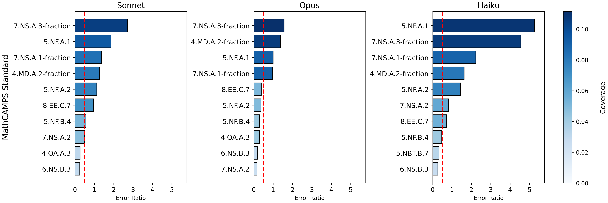
paper_nb_cell24_mathcamps_gpt_claude_sonnet.png265071 bytes · modified 2026-04-07 20:58:50 UTC
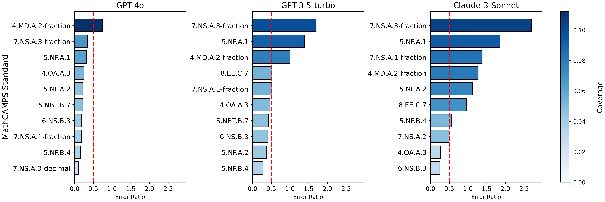
paper_nb_cell19_mmlu_subcats_grid.png722562 bytes · modified 2026-04-07 20:58:40 UTC
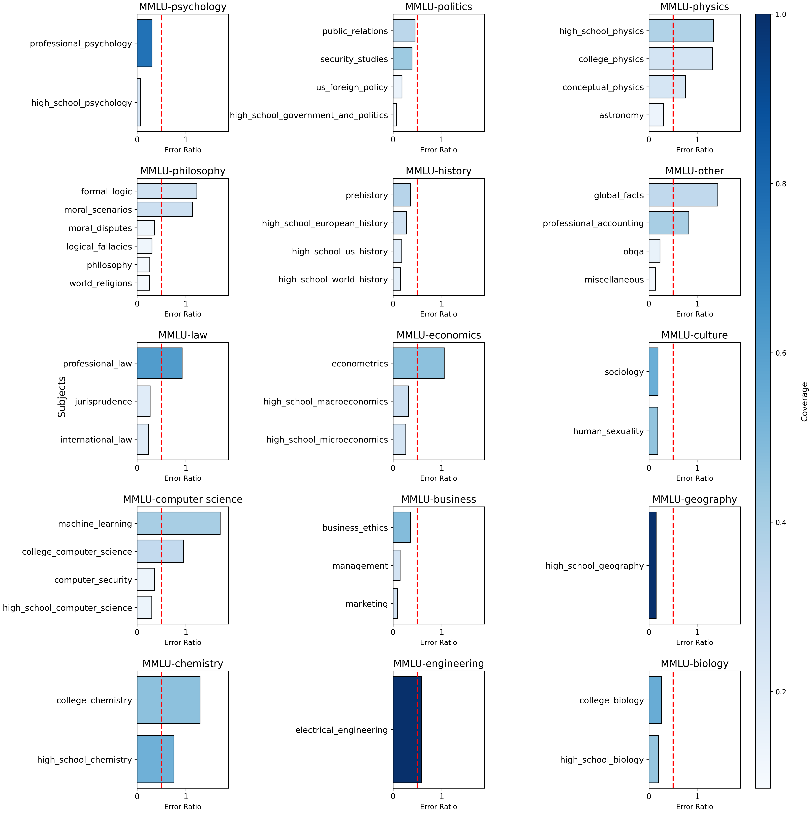
paper_nb_cell16_mmlu_math_health_vertical.png220700 bytes · modified 2026-04-07 20:58:35 UTC
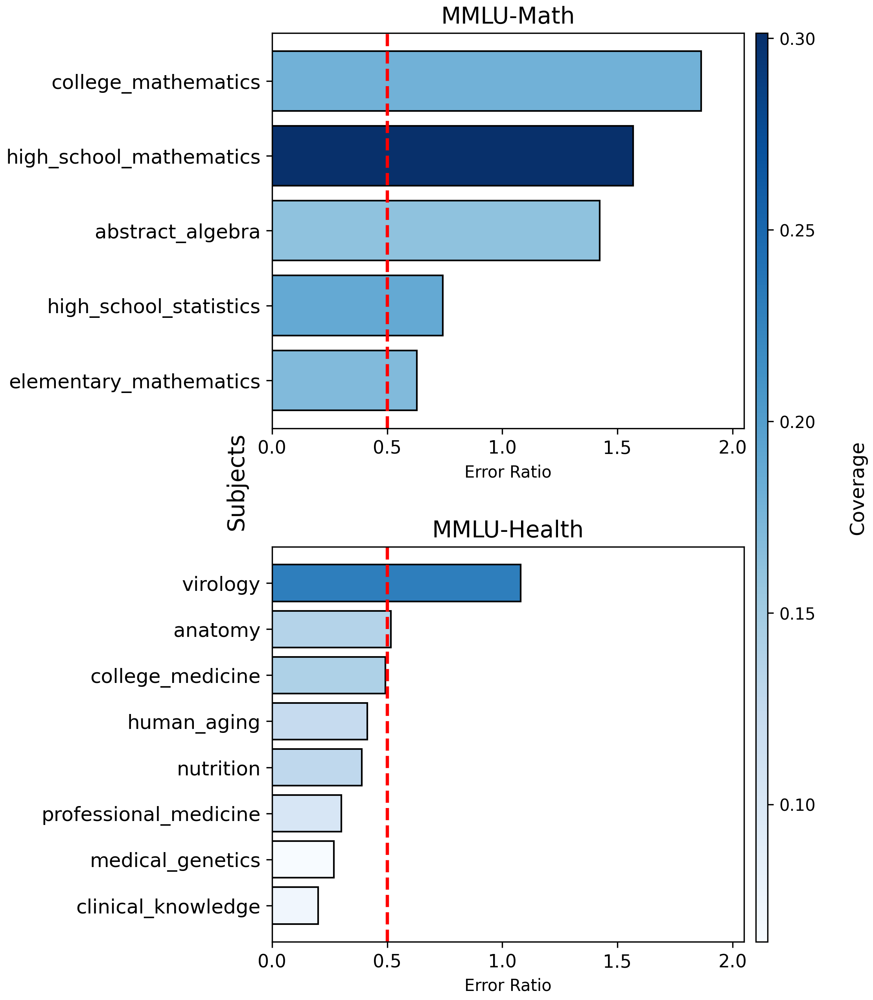
paper_nb_cell18_mmlu_math_health_horizontal.png224830 bytes · modified 2026-04-07 20:58:35 UTC
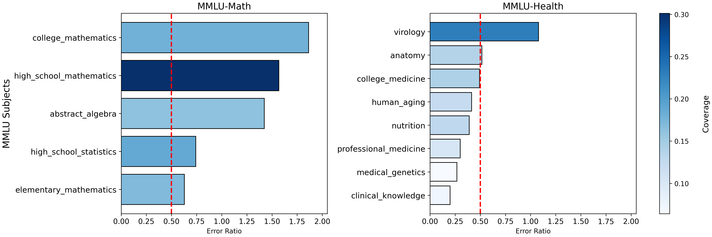
paper_nb_cell09_mmlu_all_subjects.png675661 bytes · modified 2026-04-07 20:58:34 UTC
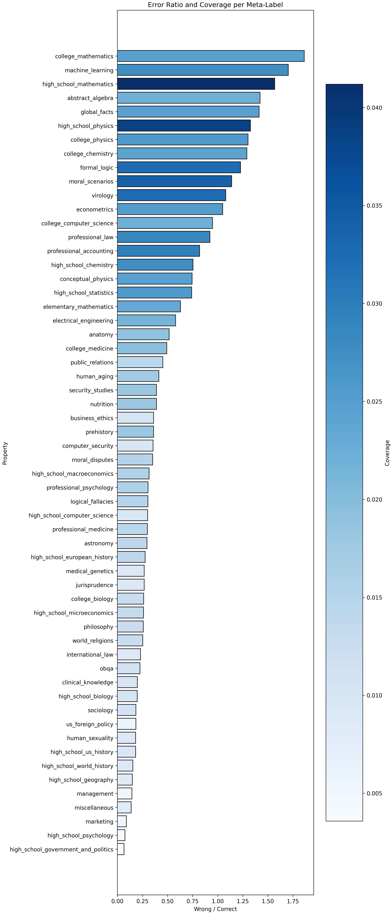
paper_nb_cell11_mmlu_by_subcat.png173283 bytes · modified 2026-04-07 20:58:34 UTC
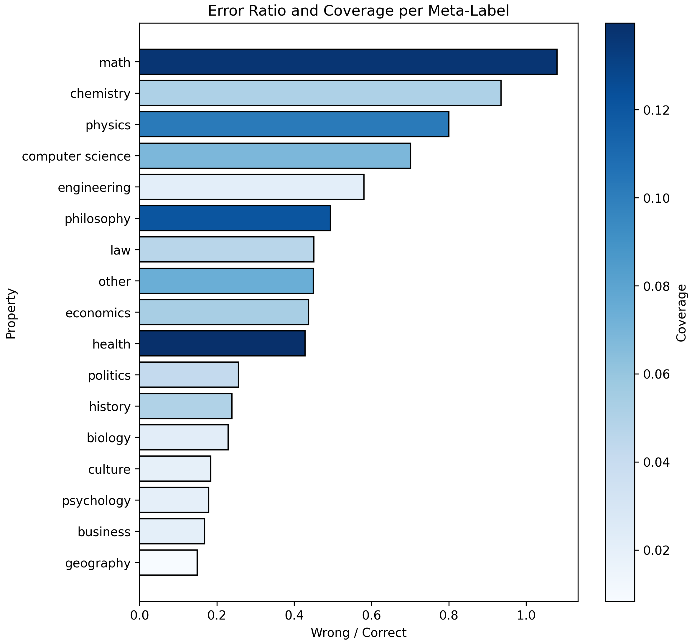
paper_nb_cell13_mmlu_subcats_psych_physics_math.png161682 bytes · modified 2026-04-07 20:58:34 UTC
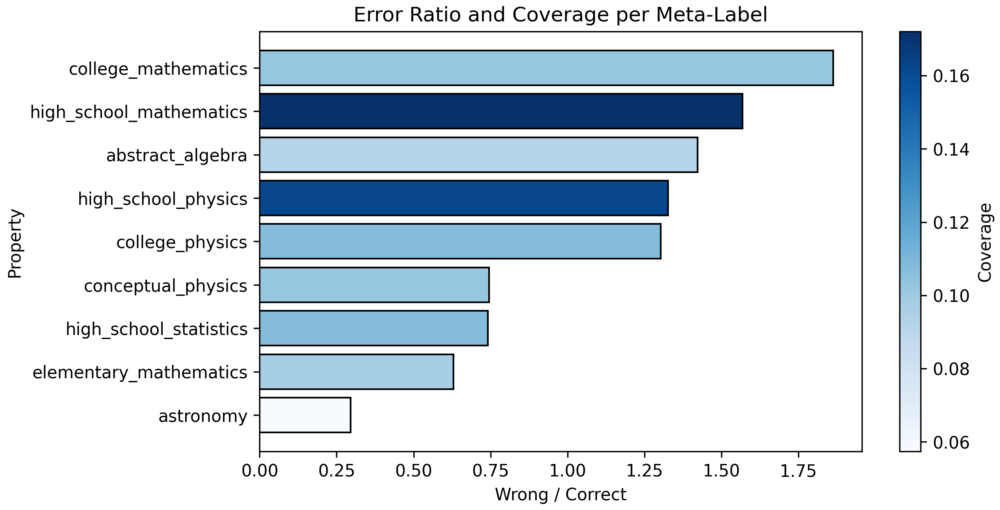
paper_nb_cell07_mmlu_subcat_computer_science.png100377 bytes · modified 2026-04-07 20:58:33 UTC
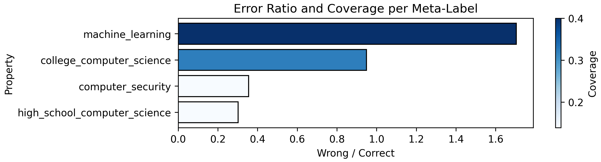
paper_nb_cell03_mmlu_math_reg.png126987 bytes · modified 2026-04-07 20:58:32 UTC
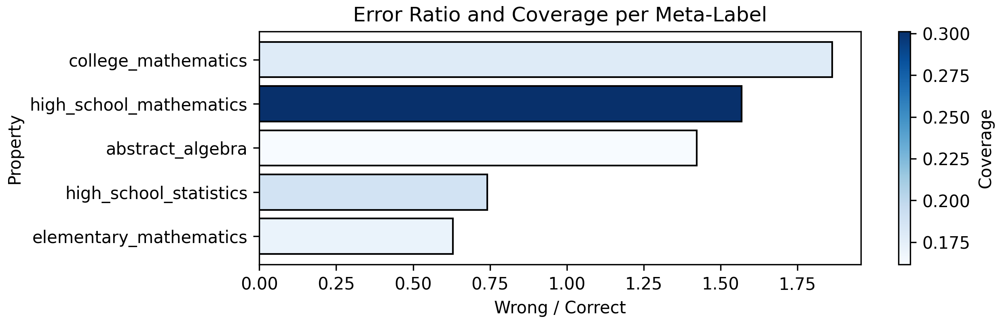
paper_nb_cell05_mmlu_health_reg.png135203 bytes · modified 2026-04-07 20:58:32 UTC
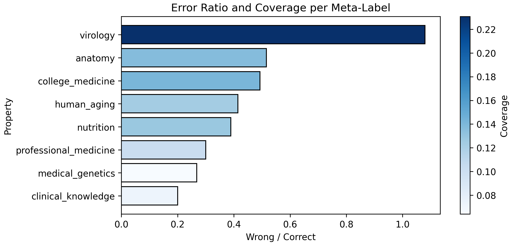
.gitkeep0 bytes · modified 2026-04-07 19:51:49 UTC
No inline preview for this file type.
paper_mmlu_error_by_subject_top20.png68522 bytes · modified 2026-04-07 19:51:49 UTC
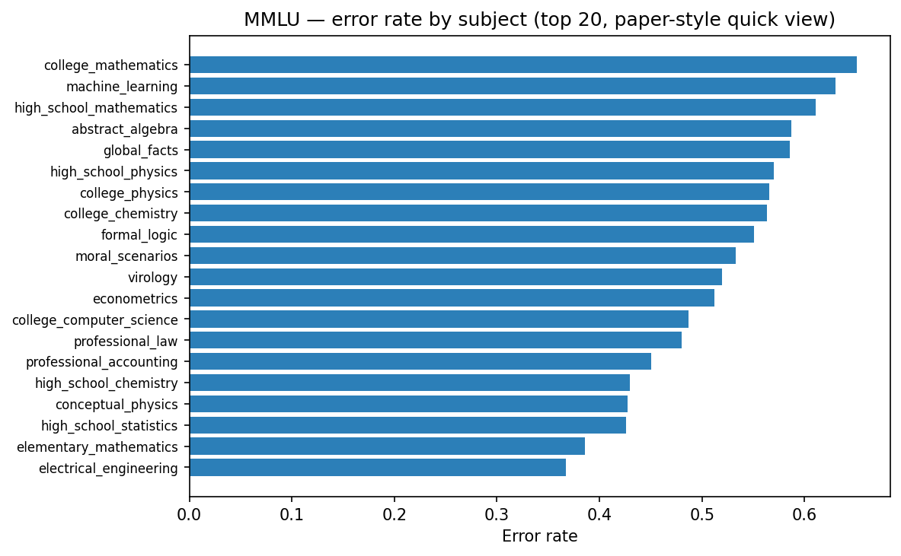